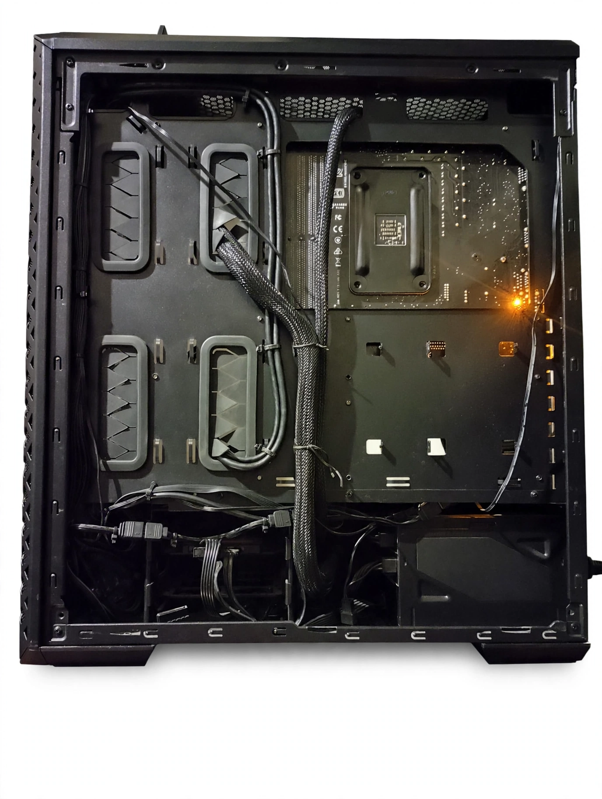
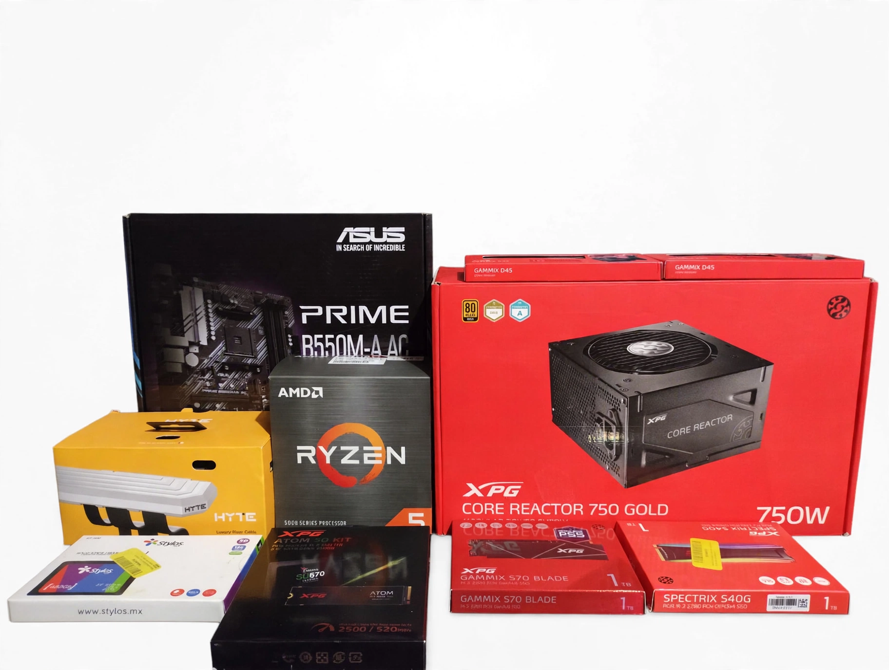
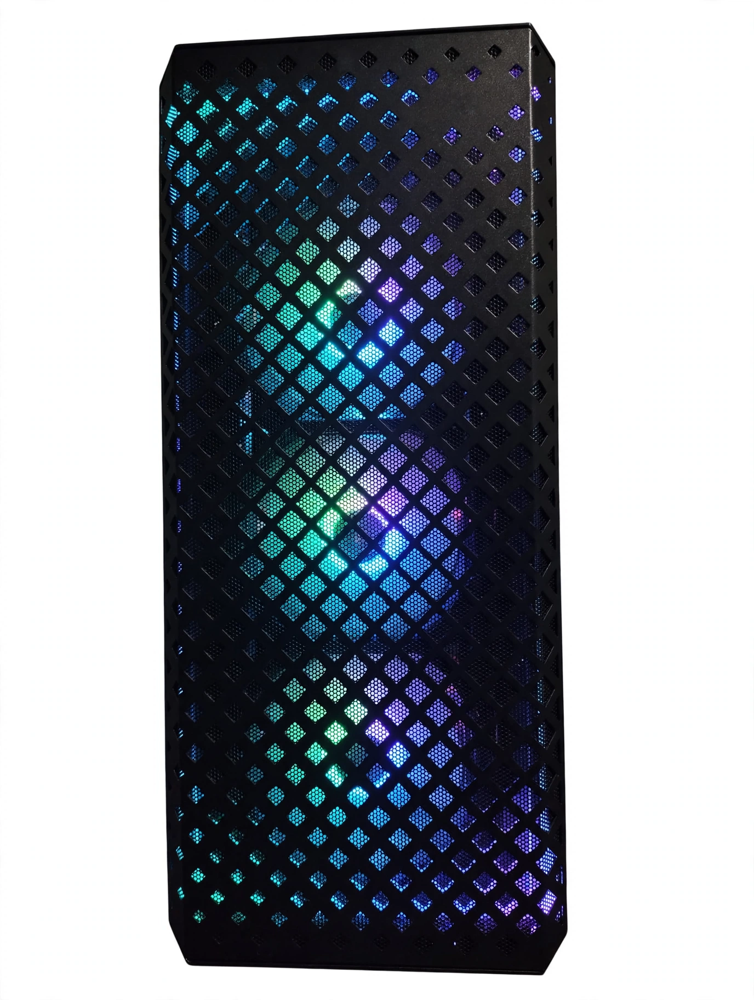
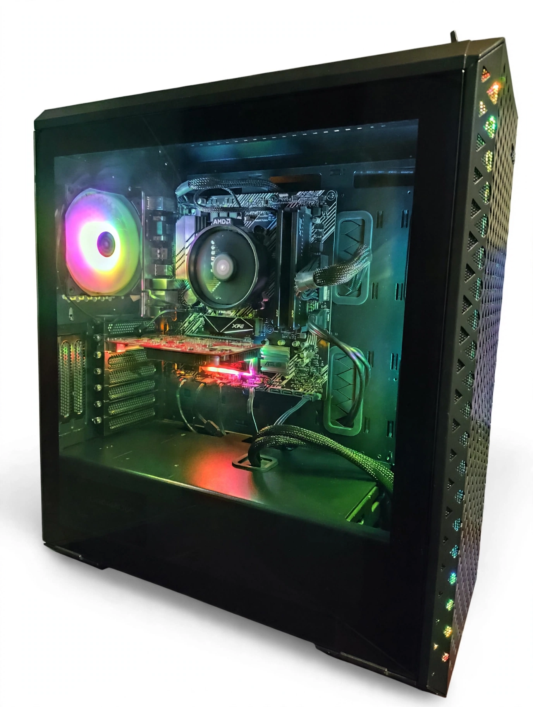

Mantenimiento
Mantenimiento preventivo
Limpieza interna, revisión de componentes y mantenimiento general del equipo.
SERVICIOS TÉCNICOS
Mantenimiento profundo, gestión térmica y ensambles a medida.
Le devolvemos la potencia y la estabilidad a tu equipo con insumos de alta calidad.
Ver paquetes de servicioNuestro trabajo
Una muestra de los trabajos que realizamos en mantenimiento, diagnóstico y ensamble de equipos.

Limpieza interna, revisión de componentes y mantenimiento general del equipo.

Ensambles personalizados de acuerdo con las necesidades y presupuesto de cada cliente.

Eliminación de polvo y suciedad para ayudar a mantener una correcta temperatura.

Identificación de problemas de hardware y recomendaciones de solución.
Nuestros servicios
Haz clic en la flecha de cada tarjeta para consultar la información.
Limpieza general y refresco térmico para PC de escritorio o laptops de uso general.
$380MXN
Limpieza a detalle y gestión térmica para PC Gamer, Workstations o Laptops de alto rendimiento.
DESDE $850MXN
Revisión de thermal pads / masilla térmica. Reemplazo cotizado aparte según estado y modelo.
Limpieza y reemplazo térmico en el chip principal.
$350MXN
Renovación térmica integral para tarjetas de video de gama media y alta
DESDE $650MXN
Reemplazo de thermal pads cotizado aparte según el modelo.
El cliente entrega las piezas y se lleva el equipo listo para instalar SO.
$350MXN
Ensamble físico completo + Instalación de Sistema Operativo.
$550MXN
Asesoría completa + Ensamble + Sistema Operativo + Pruebas.
$800MXN
Información importante
No se realiza ningún trabajo ni aplicación de insumos sin previa autorización de políticas de servicio y aceptación de la cotización.
Atención con previa cita en punto de entrega/puerta. Horario: Lunes a Sábado de 10:00 a 19:00 hrs.
50% de anticipo en ensambles a medida o pago contra entrega al finalizar las pruebas de rendimiento.
30 días de garantía por escrito en mano de obra y aplicación de insumos térmicos de gama alta (Arctic).
¿LISTO PARA OPTIMIZAR TU EQUIPO?
Envíanos un mensaje con los detalles de tu equipo o los componentes que deseas ensamblar para darte una atención personalizada.